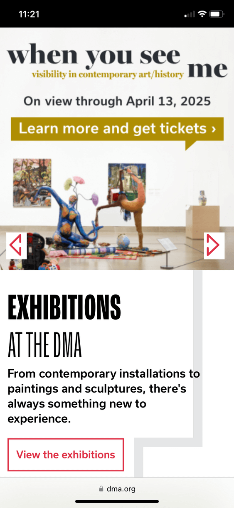

Visual Heirarchy
Old Navy
Old Navy WebsiteThe Old Navy website is a good example of Visual Heirarchy. The sales are listed first, to catch the viewers attention and hook them with the possibility of low prices. The seasonal and regular items are listed next, and the Clearance items at the bottom.
Rule of Thirds
Dallas Museum of Art
Dallas Art Museum The Dallas Museum of Art website is a good example of the Rule of Thirds. The art pictured on the site follows the rule, as does the website itself. The text is offset, and the images as well. The mobile version is not as good at it as the larger screen version, but does it's best.
White Space and Clean Design
The Church of Jesus Christ of Latter Day Saints
Church of Jesus Christ of Latter Day Saints WebsiteThe Church of Jesus Christ of Latter Day Saints website is a good example of the use of White Space and Clean Design. The page feels simple and uncluttere. There is space between the elements, and the message and calls to action are clear.q